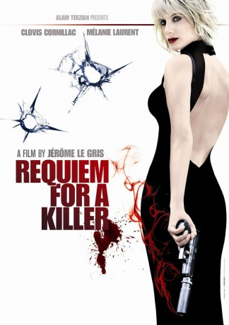
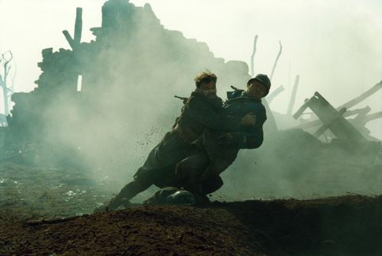
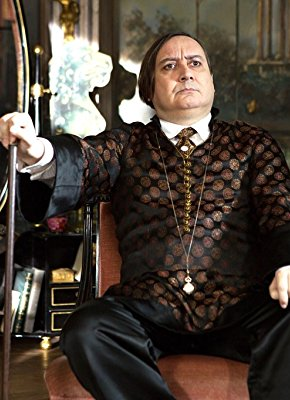
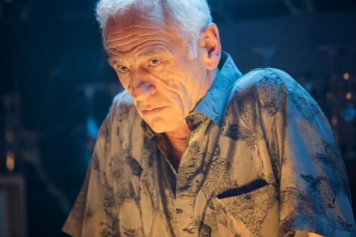
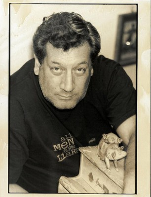

#8302 Requiem for a Killer
 
 IMDB-Wertung: 5.1 / 10
IMDB-Wertung: 5.1 / 10  Metascore: 0
Metascore: 0 
Als Auftragskillerin genießt Lucrece einen geradezu legendären Ruf: Absolut zuverlässig erledigt sie ihre Missionen, mögen sie noch so exzentrisch sein. Aber Lucrece ist des Mordens überdrüssig - ein letzter Auftrag noch, dann soll Schluss sein. Ihr Ziel ist der Sänger Alexander Child, weil er sich weigert, ein Stück Land in Schottland zu verkaufen, ohne dass ein großer Ölkonzern auf eine lang geplante Pipeline verzichten muss. So wird Lucrece als Sängerin in das kleine Ensemble eingeschleust, das mit Child und anderen Musikern in einem kleinen Schweizer Schlösschen Händels "Messias" aufführen soll. Ebendort aber lässt sich auch Geheimagent Rico in das Ensemble einschleusen. Er fahndet nach einem geheimnisvollen Killer, den die Polizei seit Jahren jagt ...
Jahr: 2011
Dauer: 92 Minuten
FSK: 16
Land: Frankreich Studio: StudioCanalTonspuren:
Untertitel:
Auflösung: 1080p (1920x816) Größe: 7536 MB
Genre: Thriller
Regisseur: Jérôme Le Gris
Drehbuch: Jérôme Le Gris
Soundtrack: Jiri Heger, Anne-Sophie Versnaeyen, Régis Vogëlène
Darsteller:
- Mélanie Laurent als Lucrèce
-  Clovis Cornillac als Rico
 Tchéky Karyo als l'Arménien
Tchéky Karyo als l'Arménien- Corrado Invernizzi als Vittorio Biamonte
-  Michel Fau als Le chef d'orchestre
-  Johan Leysen als Van Kummant
-  Jean-Claude Dreyfus als Le maitre de chant
- Conrad Cecil als L'ingénieur British Oil
- Ophélie Koering als La Percussioniste
- Xavier Gallais als Xavier de Ferrières
- Christopher Stills als Alexander Child
- Frédérique Tirmont als La colonel
- Julie Fuchs als Olga Babayova
- Geoffrey Bateman als Le PDG British Oil
- Philippe Morier-Genoud als Le prêtre
- Julien Israël als Seymour
- Bruno Flender als Ottmar
- Michel Bouis als Le remplaçant d'Ottmar
- Clara Ruscon als La fille de Lucrèce
- Stefane Mellino als Le deuxième guitariste
- Pascal Mottier als Le barman
- Florian Westphal als Tyler Edwards
Datei: X:\2011(N-Z)\Requiem for a Killer (2011, FSK16, 1920x816).mkv seit 20.02.2018
Festplatte: HD 2011(G-Z)
 Es gibt insgesamt 132 Filme in der Gruppe '2011(N-Z)'
Es gibt insgesamt 132 Filme in der Gruppe '2011(N-Z)'